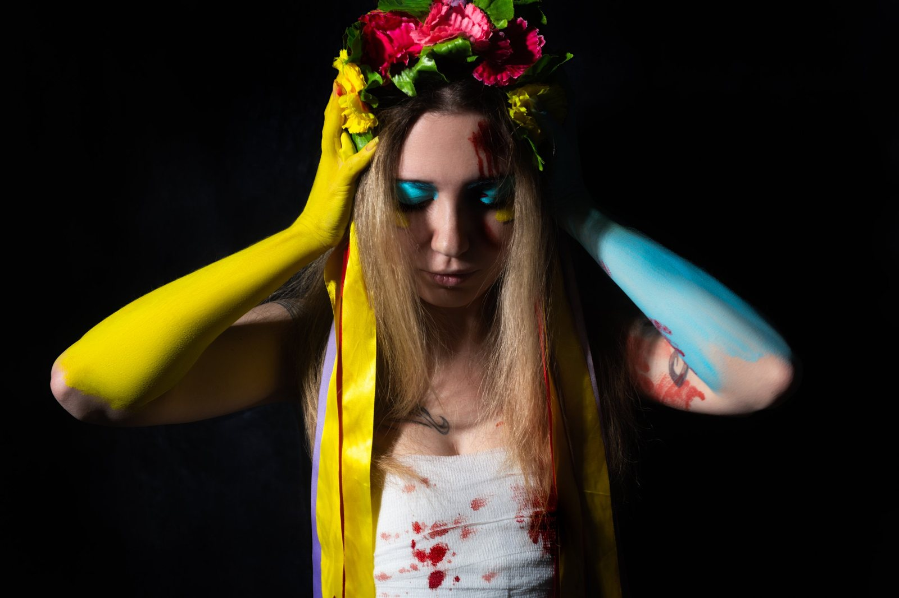

Amata Lynner
Ukrainian visual storyteller. AI films, commercial video, and documentary photography.
SELECTED AI FILMS
SELECTED PHOTOGRAPHY



Ukrainian visual storyteller. AI films, commercial video, and documentary photography.
